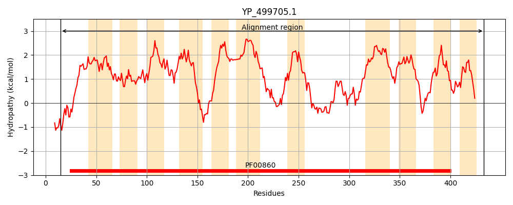
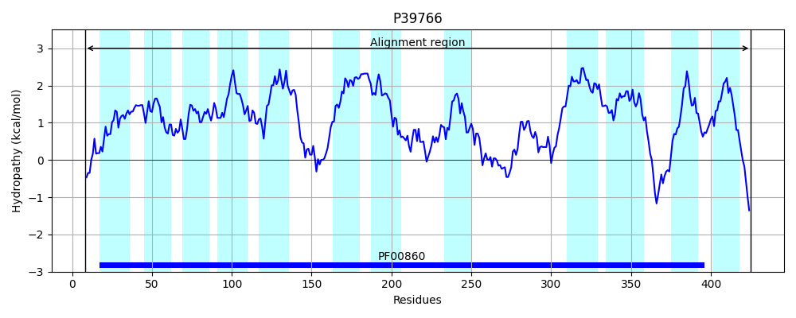
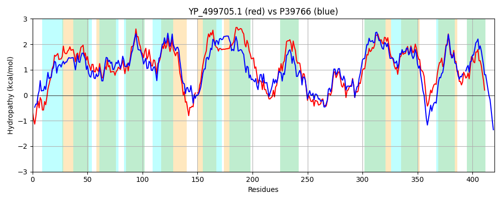

Hit Accession: P39766
Hit TCID: 2.A.40.1.4
Hit Description: gnl|BL_ORD_ID|10300 gnl|TC-DB|P39766|2.A.40.1.4 Uracil permease OS=Bacillus subtilis (strain 168) GN=pyrP PE=1 SV=2
Mach Len: 420
e:0.000000
Query TMS Count : 11
Hit TMS Count: 12
TMS-Overlap Score: 9.100000
Predicted Substrates:CHEBI:9882;uracil
BLAST Alignment:
Score: 1297 , Bit scores: 504 bits, E-value: 4.0e-178, Alignment length: 420, Percentage identity: 60
Query: 15 LDVNEKPQPAQWAFLSLQHLFAMFGATVLVPFLTGLPISAALLASGIGTLLYILITKAQIPAYLGSSFAFITPIITGLSTHSLGDMLVALFMSGVMYVIIGILIKLSGTAWLMKLLPPVVVGPVIMVIGLSLAPTAVNMAMYENPGDMK-GYNISFLIVAMITLLVTIVVQGFFKGFLSLIPVLVGIIVGYVVAIFMGIVKFDAIMSAKWIDFPHIYLPFKDYVPSFHLGLVLVMIPIVFVTVSEHIGHQMVLNKIVGRNFFEKPGLDKSIIGDGVSTMFASIIGGPPSTTYGENIGVLAITRIYSIYVIGGAAVIAIVLAFIGKFTALISSIPTPVMGGVSILLFGIIAASGLRMLVESKVDFANNRNLVIASVILVVGIGNLVFNLKEIGINLQIEGMALAALSGIILNLILPKEKKQ 433
L V + P P W SLQHLFAMFG+T+LVP L G+ + AL+ SGIGTL Y+LITK QIPAYLGSSFAFI+PII +T G +V F++G++Y +I +LI+ GT WLMK+LPPVVVGPVI+VIGL LA TAVNMAMY +P + Y++ VA +TL +TI+ F +GFLSLIPVL+GII GY+ A+ GIV F ++ AKW P +PFKDY PS LG+ M+P+ FVT+SEHIGHQMVL+K+VG++F +KPGL +SI+GD V+T+ AS+IGGPP+TTYGENIGVLAITR++S++VIGGAAVIA+ FIGK +ALISS+P+ VMGGVS LLFGIIA+SGLRML+++K+D+ NNRNL+I SVILV+G+G + + G Q+ GMALAA+ G+ILNLILP+ K++
Sbjct: 8 LGVRDVPTPFSWVSFSLQHLFAMFGSTILVPKLVGMSPAVALVTSGIGTLAYLLITKGQIPAYLGSSFAFISPIILVKATGGPGAAMVGAFLAGLVYGLIALLIRQLGTGWLMKILPPVVVGPVIIVIGLGLASTAVNMAMYADPNASELVYSLKHFSVAGVTLAITIICAIFLRGFLSLIPVLIGIIGGYLFALTQGIVNFQPVLDAKWFAVPEFIIPFKDYSPSVTLGIAAAMVPVAFVTMSEHIGHQMVLSKVVGQDFIKKPGLHRSIMGDSVATILASLIGGPPTTTYGENIGVLAITRVFSVFVIGGAAVIALCFGFIGKISALISSVPSAVMGGVSFLLFGIIASSGLRMLIDNKIDYENNRNLIITSVILVIGVGGAFIQVSQGG--FQVSGMALAAIVGVILNLILPQAKEE 425 | Protein Hydropathy Plots: |
|---|
|  |  |
Pairwise Alignment-Hydropathy Plot:
|
|---|
|  |